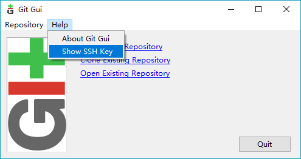
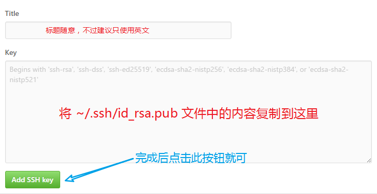

Hexo 支持一键部署到 GitHub 仓库，所以我们可以使用 Hexo 结合 GitHub Pages 来搭建在线个人博客。
本地 Git 客户端
本地 Git 客户端配置，主要是为了能够在命令行模式下与远程的 GitHub 通信。
Git配置
打开命令行，键入以下命令：
|
|
其中，字符串中的内容替换为你自己的信息，这里为了清晰一致，建议使用 GitHub 账户相同的配置信息。
创建 SSH Key
打开安装好的 Git Bash，键入：
|
|
回车之后，会启动 Git GUI 软件。在 Git GUI 软件界面，依次点击 Help => Show SSH Key

在出现的 OpenSSH 界面，点击右上角的 Generate Key 以创建 SSH Key。注意，期间会让你输入密码两次，这个密码是本地 Git 与远程 Git 通信时要用到的，要牢牢记住。
OpenSSH 创建好的 SSH Key，会被存储到为一个私钥文件和一个公钥文件；如果是 Windows 操作系统的话，则他们位于 ./c/Users/pcusername/.ssh 路径下，名称分别是 id_rsa 和 id_rsa.pub。
远程 GitHub
创建github.io仓库
登入你自己的 GitHub 账户，创建一个新的仓库，仓库名为 username.github.io，其中 username 替换为你自己的 GitHub 用户名，就是你个人 GitHub 主页 URL 中的最后一部分。
创建好仓库后，做一次初始提交，以便初始化这个仓库。
配置 SSH Pub Key
打开你的 GitHub 个人主页，点击右上角个人头像，选择 Settings，进入设置页面。
在左侧选择 SSH and GPG keys，然后在右侧点击 New SSH key，将刚刚创建的 SSH Key 的公钥文件 id_rsa.pub 中的内容复制到 Key 文本框中。

本地 Git 与远程 GitHub 通信
上面配置都搞定以后，我们来测试一下 Git 是否可以和我们远程的 Git 仓库通信。
命令行键入以下命令：
|
|
当键入以上命令回车后，会出现让我们输入密码的提示，这个密码就是刚刚我们使用 Open SSH 创建 SSH Key 时所输入的密码。
注意！！！ 输入密码时冒号之后什么也不会显示，所以你只管输入就行，正确无误后按下回车键即可。
如果成功连接，会出现提示信息：
Hi your-github-username! You’ve successfully authenticated, but GitHub does not provide shell access.
Hexo
依赖
为了正常部署到远程 Git 仓库，我们还需要先安装一个 Hexo 插件 hexo-deployer-git。
在站点文件夹根目录下打开命令行，键入以下命令：
|
|
配置
由于是部署到远程的 Git 仓库，所以我们需要修改一些配置参数以使其符合针对 Git 的部署配置。
使用文本编辑器打开站点文件夹根目录下的 _config.yml 文件，修改其 deploy 字段之后的内容：
|
|
其中，各个参数意义如下：
repo：要部署的远程 Git 仓库地址branch：仓库分支名称，程序会自动检测，如果你创建的仓库没有做过修改，那么该值应该就是mastermessage：自定义 Git 的本次 commit 信息（Hexo会按照一定默认生成）
部署
如果我们已经生成好了本地静态站点，那么只需下面的命令，即可将其一键部署到服务器上。使用安装好的 Git Bash 终端，在站点根目录下键入：
|
|
!!!注意： 以上命令一定要在 Git Bash 终端中键入，因为我们使用的 SSH 协议推送本地仓库到远程分支，必需使用到 Git Bash 内置的 Open SSH 客户端。在此期间，会跳出 Open SSH 的界面，让我们输入密码，就是之前我们用来加密 SSH Key 的在命令行输入的那个密码。
现在，打开 GitHub Pages 看一下效果吧。
完成后部署
我们可以让 Hexo 在生成完毕后自动部署网站到服务器，只需使用以下两个命令之一即可：
|
|
上面这两个命令是等价的。